Explore Berlin
A Brief History
Berlin became the capital of Prussia and later the German Empire after unification in 1871. Boulevards, museums, and the Reichstag expanded through industrial growth. The city was divided after 1945, with the Berlin Wall separating East and West from 1961 until 1989. Reunification restored it as the federal capital. Museumsinsel, Brandenburg Gate, and surviving neighborhoods record Prussian, Weimar, Nazi, and Cold War layers.
Attractions Map
Top Sights & Activities
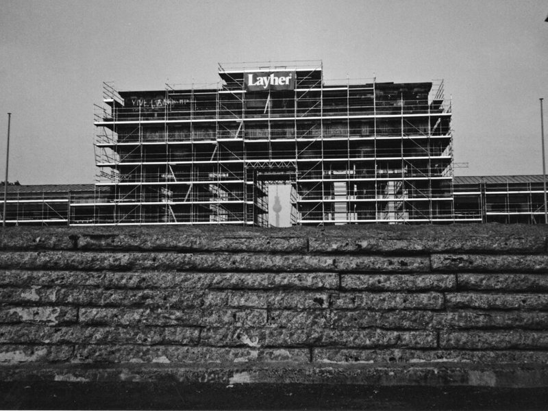
Kaiser Wilhelm Memorial Church
The Kaiser Wilhelm Memorial Church on Breitscheidplatz combines the ruined tower of a neo-Romanesque church destroyed in 1943 with a modern belfry and chapel added in the 1960s. The damaged spire was deliberately left unrepaired as a memorial against war. The new buildings use blue glass and concrete in a striking contrast to the old stonework.
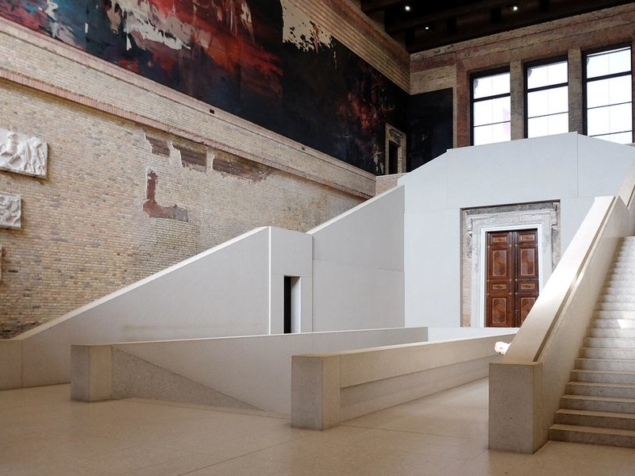
Brandenburg Gate
The Brandenburg Gate is an 18th-century neoclassical monument designed by Carl Gotthard Langhans at the western end of Unter den Linden. It marked the entrance to the city on the road to Brandenburg an der Havel. After standing in the shadow of the Berlin Wall, it became a focal point for celebrations of German reunification in 1989.
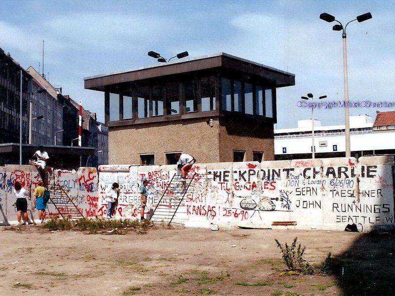
Berliner Fernsehturm
The Berlin TV Tower was built in 1969 in Alexanderplatz by the East German government as a visible symbol of socialist modernity. At 368 meters it remains the tallest structure in Germany. An observation deck and revolving restaurant draw visitors for views across both former East and West Berlin districts.
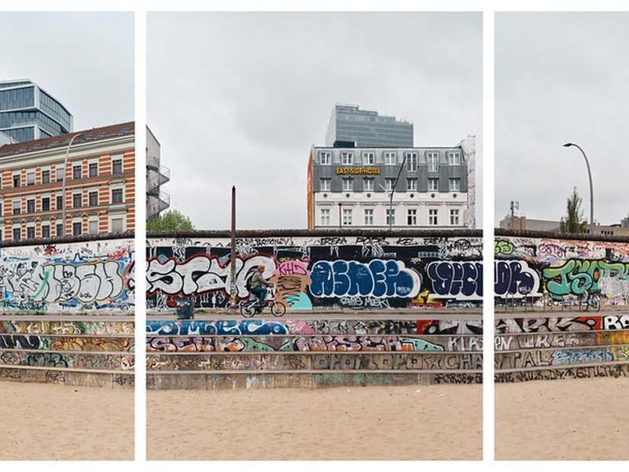
Marx-Engels Forum
The Marx-Engels Forum is a public square near the Spree featuring bronze statues of Karl Marx and Friedrich Engels seated on a bench. Created in the 1980s by the East German state, it reflects the ideological landscape of the former capital. The square was redesigned after reunification but the monuments remain.
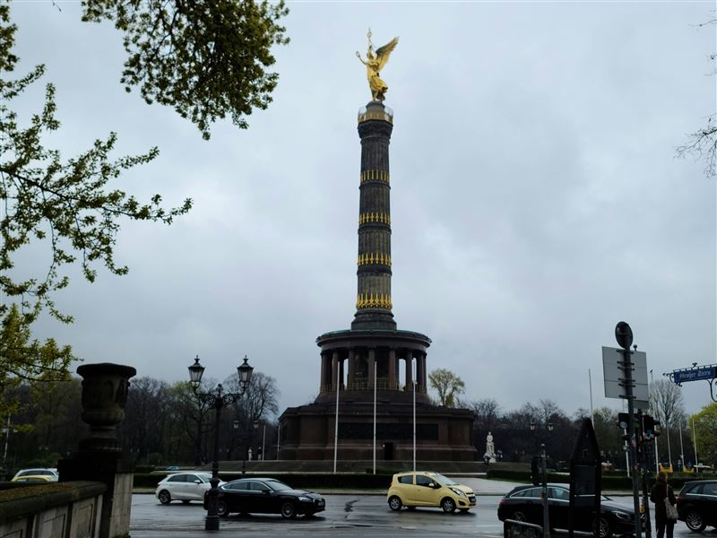
Siegessaule
The Victory Column, or Siegessäule, stands in the Tiergarten and commemorates Prussian military victories in the 19th century. A gilded Victoria figure crowns the 67-meter shaft. The column was moved to its current location by the Nazis and now sits at the center of a major traffic circle.
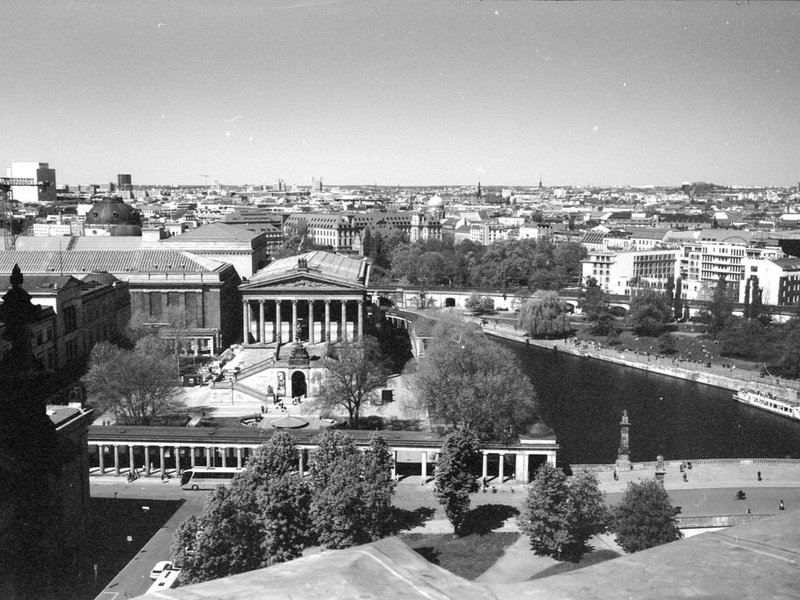
Grosser Tiergarten
The Großer Tiergarten is a 210-hectare park in the city center, originally a royal hunting ground laid out in the 16th century. Paths, lawns, and waterways connect monuments including the Victory Column and the Soviet War Memorial. The park provides open green space amid government buildings and embassies.
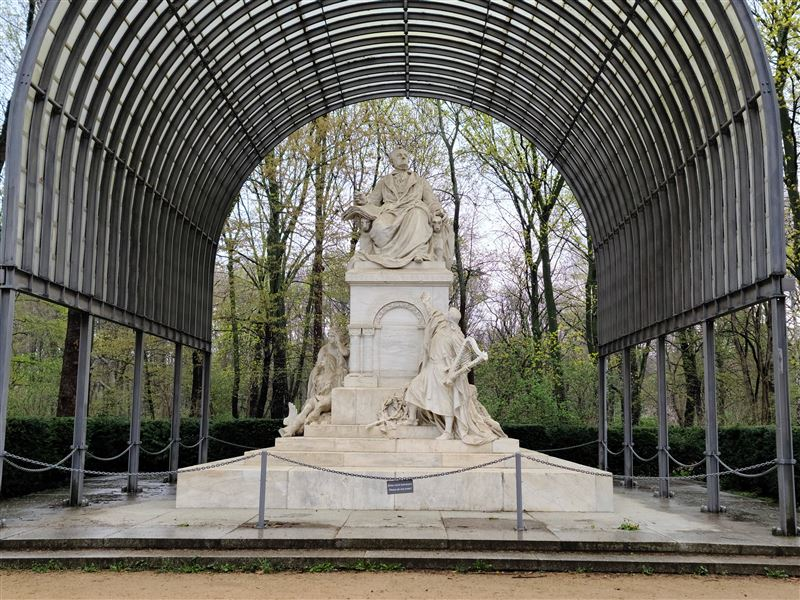
Richard Wagner Monument
The Richard Wagner Monument in the Tiergarten is a marble statue of the composer erected in 1908. It was removed during the Nazi era and restored to its original site after the war. The monument honors Wagner's influence on German opera and his years spent in Berlin during the 19th century.
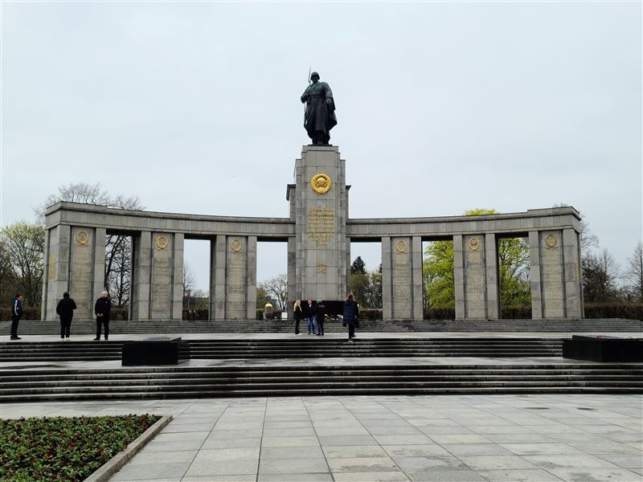
Soviet War Memorial Tiergarten
The Soviet War Memorial in the Tiergarten was built in 1945 to honor Red Army soldiers who died in the Battle of Berlin. A curved colonnade frames a central statue of a Soviet soldier, and the grounds contain graves of fallen troops. It was one of the first memorials erected in the defeated city.
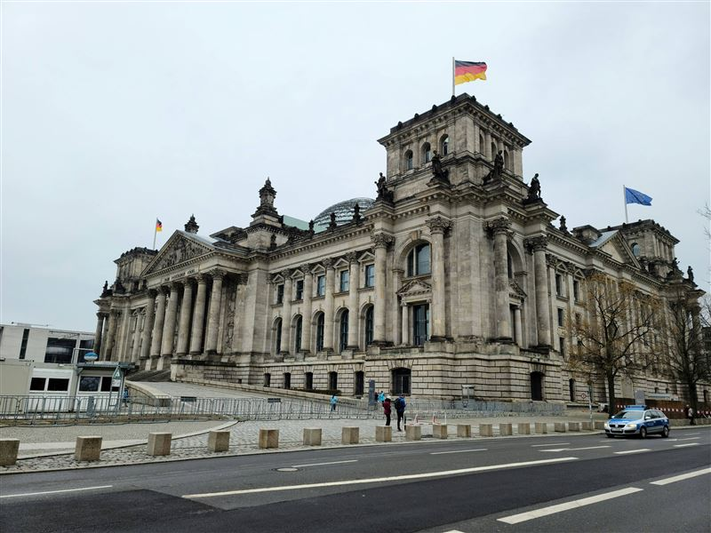
Reichstag Building
The Reichstag building houses the German parliament, recognizable by its Renaissance-style facade and the glass dome added by Norman Foster after reunification. A fire in 1933 and wartime bombing damaged the structure, which was fully restored for the move of the capital from Bonn to Berlin in 1999. Dome visits require advance registration.
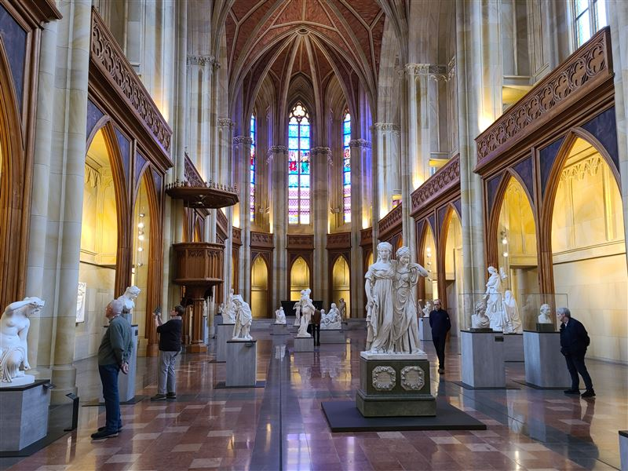
Friedrichswerdersche Church
The Friedrichswerdersche Church was designed by Karl Friedrich Schinkel and completed in 1831 as Berlin's first neo-Gothic church. After wartime damage and periods of disuse, it was restored and now serves as a museum of 19th-century sculpture. The interior's slender columns and ribbed vaulting illustrate Schinkel's architectural approach.
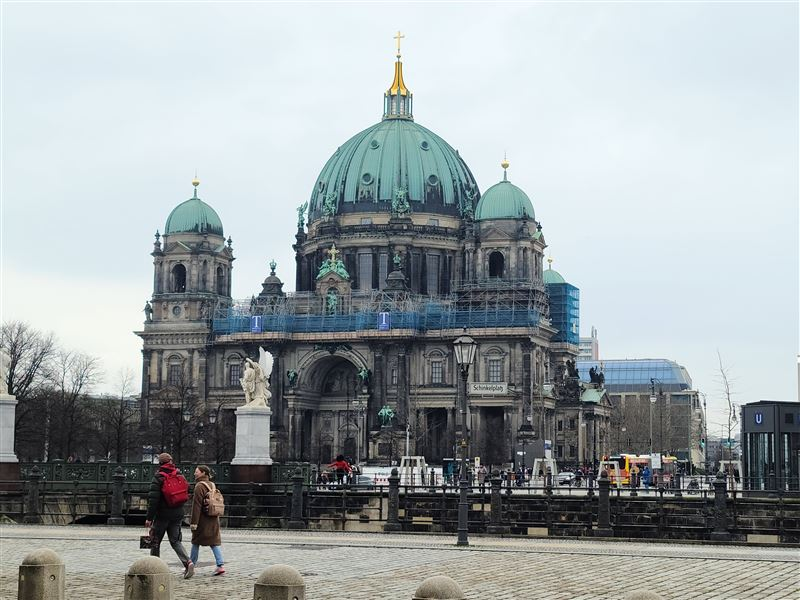
Berliner Dom
The Berlin Cathedral, or Berliner Dom, is a Protestant church on Museum Island built as the court church of the Hohenzollern dynasty in the early 20th century. Its large dome and ornate interior were restored after wartime damage. The Hohenzollern crypt below the church holds tombs of princes and emperors.